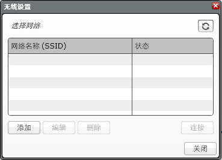

					<table cellpadding="0" cellspacing="0" border="0"><tbody><tr><td>
	
						<h1>无线设置<a name="top"></a></h1>
		<div id="block_960" class="block blockHeader">
				<div class="description">可以使用无线设置工具设置与 EV3 程序块的无线连接。</div>
			</div>
	<div id="block_961" class="block blockChaptor">
		<div class="title"></div>
		<div class="description"><br>
<br>
可通过“工具”菜单或通过单击位于硬件页面“信息”选项卡上的“无线设置”按钮来访问无线设置工具。<br>
<br>
要添加或编辑连接，请选择“添加”或“编辑”按钮并填写网络名称和/或密码。<br>
<br>
要删除连接，请选择要删除的网络并单击“删除”。<br>
<br>
有关更多信息，请参见<a href="./index.html?id=ConnectingToBrick">连接到 EV3</a>。</div>
	</div>
	
			<div id="quick">
				<div class="header"><a href="./index.html?id=WirelessSetup#header">无线设置</a></div>
					<div class="quickText">快速链接</div>
					
					<ul>
						</ul>
			</div>
	
	</td></tr></tbody></table>